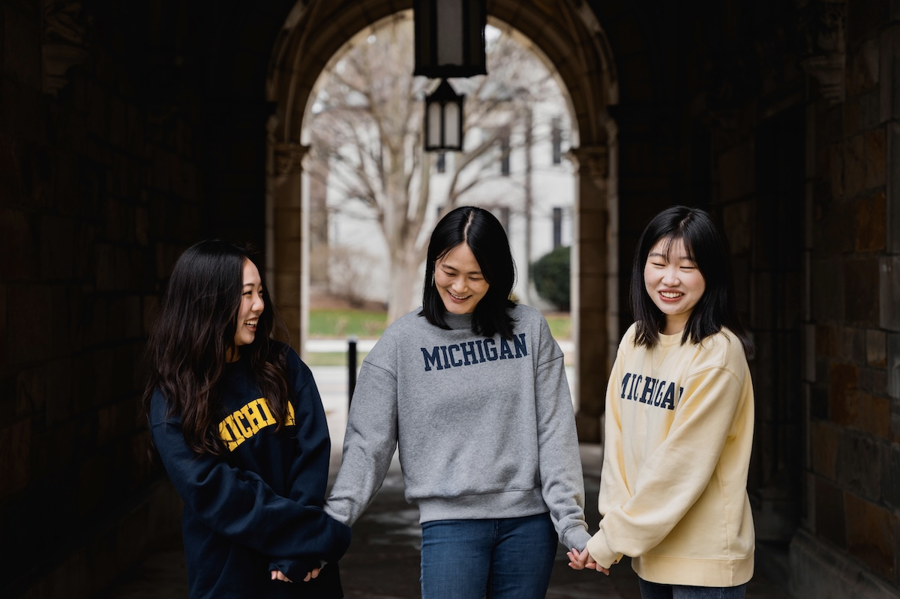
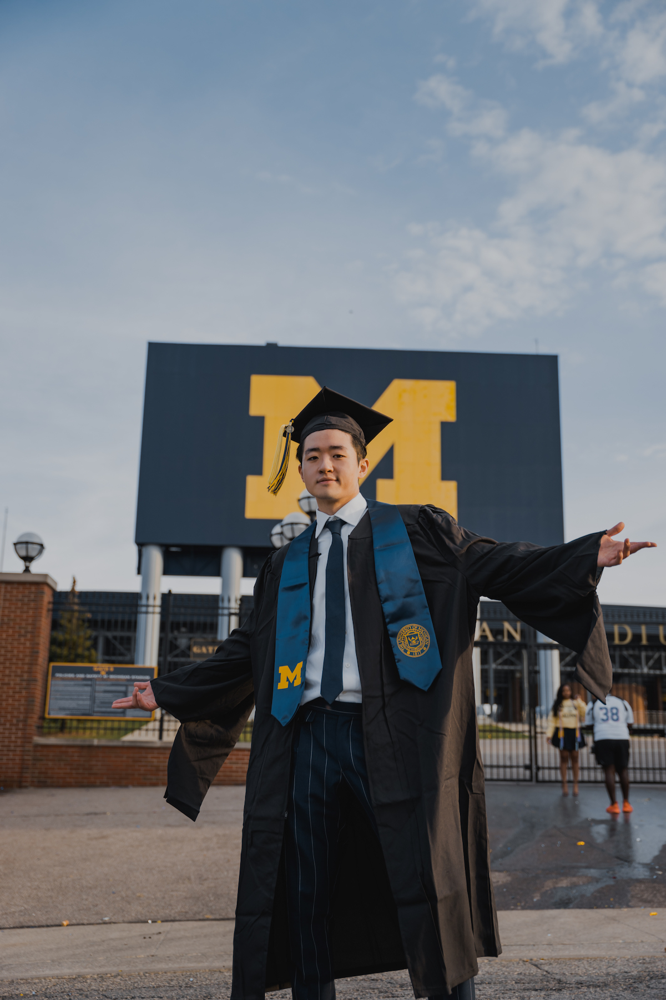
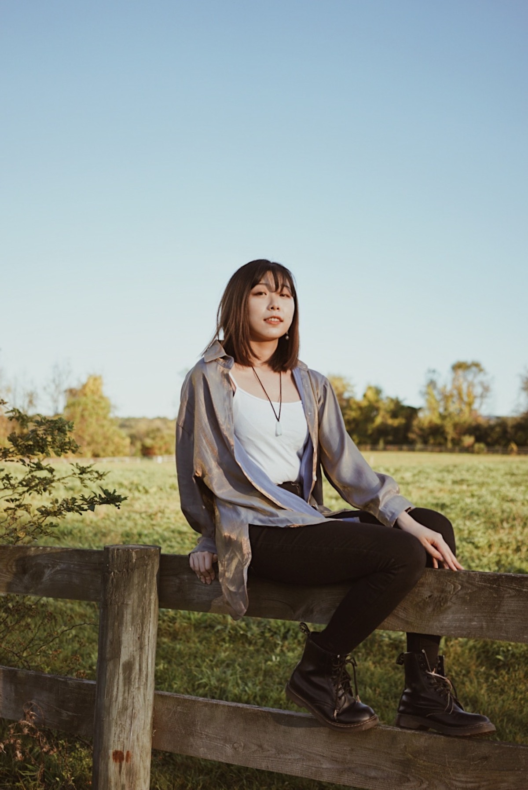
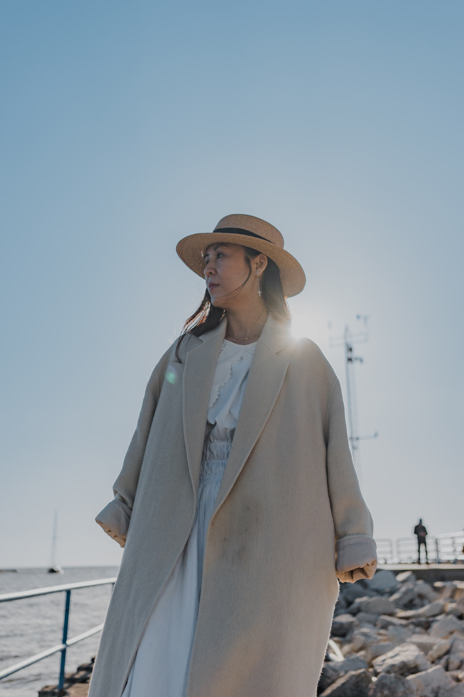
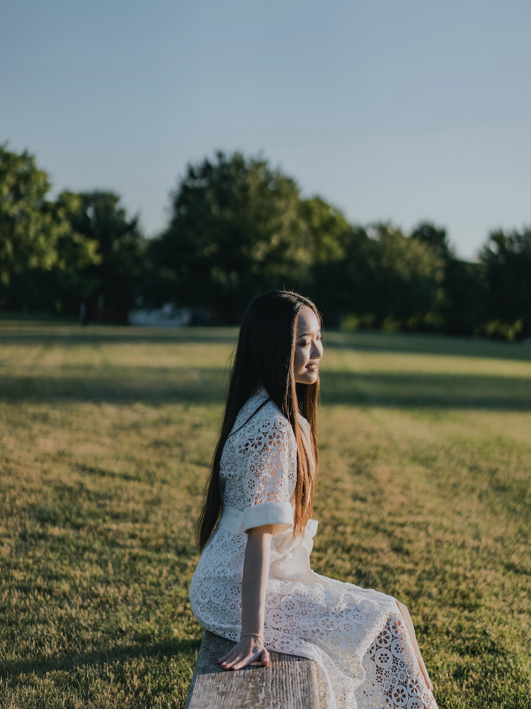
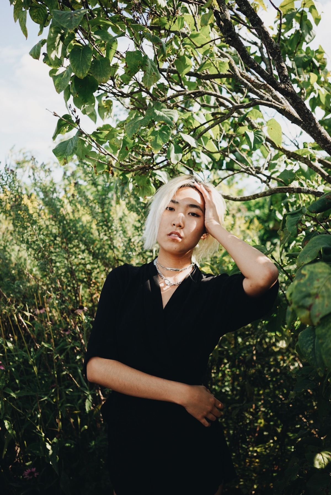
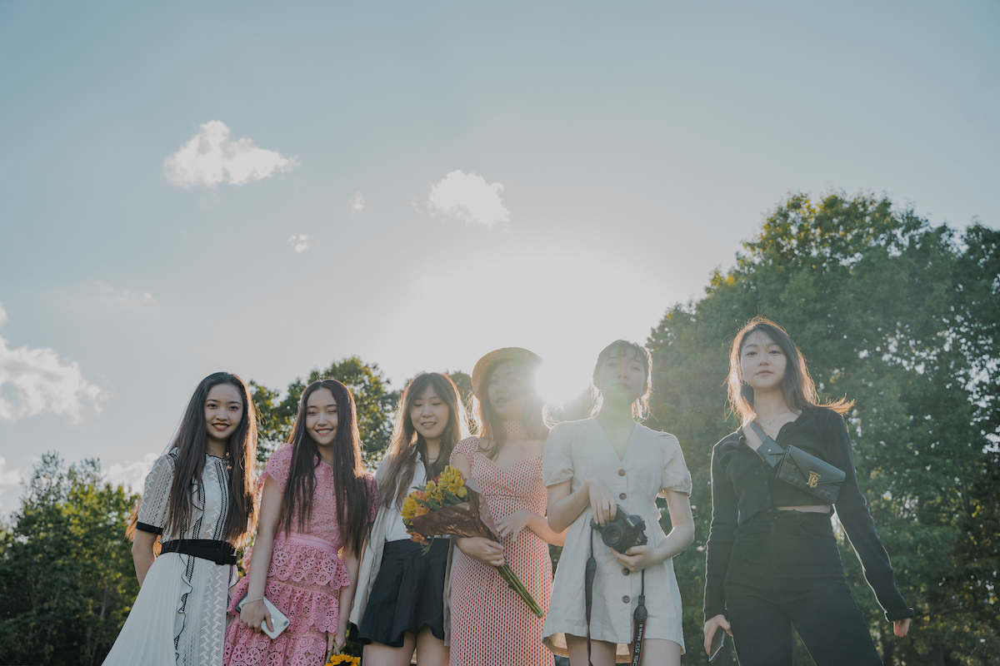

Gallery

Starting from the left is Grace Kim, Grace Song, and Chen Chen. These three girls are great friends that I met in 2021. They wanted to do a very casual photoshot, so this is one of the result

Clement. Another great frirend that I met during my first year here at UMSI. I had such a fun time taking graduation photos for him. Weather was super nice that day.


Qingran. My college roommate. Taken in the dog park behind our apartment complex

Yuki's mom. Photo taken by the Lake Michigan beach.

This is Christine. A great friend from undergrad.

I captured this photo during a photography event

I captured this photo during a picnic with some friends.